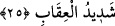

eğer namazda olduğunu bildiği halde çağırmışsa ona icabet etmemesinde bir beis yoktur.
Fakat namazda olduğunu bilmeden çağırmışsa ona icabet eder. Farz bir namazı eda eden
kimseyi anne-babasından biri çağırsa, namazını bitirmedikçe ona icabet etmez. Ancak
bir şey için acele olarak yardım isterse icâbet eder. Çünkü zarûret olmadan namazı
kesmek caiz değildir. Nâfile orucu bozmak da böyledir. Nâfile oruç tutan kimseye
orucunu bozması için ısrar edilirse zevalden önce bozması câizdir. Daha sonra ise
bozması caiz değildir. Ancak orucu bozmadığında anne-babaya veya sadece birine karşı
gelme durumu müstesnâ. (Şerhu’t-Tuhfe ve el-Vikâye’de böyle geçmektedir.)
Herhangi bir sebeple kaza orucunu bozmak ise mekruh görülmüştür. (ez-Zâhidî’de
böyle denilmektedir.)
Sonra yine bilesin ki ilim, edeb ve emniyet sıfatlarına sahip evliyâya icabet, işaret
yoluyla peygambere icabete dâhildir. Çünkü onlar peygamber vârisleridir ve yolları
Nebî (a.s.)’ın yoludur. Allah’a vâsıl olmak isteyen kimsenin mutlaka makam ve
mertebeleri bilen kâmil bir mürşidin sohbetine katılması, hoşuna gitsin veya gitmesin
davet ettiği şeyleri kabul etmesi gerekir. Çünkü bu yol akıl yolu değil, keşf ve ilham
yoludur.
Ey Hâfız! Başında vuslat arzusu varsa
Hüner ehlinin kapısına toprak olman gerek
Tarîkat ehli üç sınıftır: Âbidler, müridler ve ârifler. Âbidlerin yolu, çok amel etmek,
zinâdan ve sapıklıktan kaçınmaktır. Müridlerin yolu, bâtını kirlerden temizlemek ve boş
meşgalelerden uzak durmaktır. Âriflerin yolu ise kalbi Allah için tertemiz hale getirmek
ve O’nun rızasını talep yolunda dünya ve âhireti bezletmektir.
Allah’ım, bizi hak dâvete icâbet edenlerden eyle! Bize tahakkuku kesin sırların tadını
tattır!
25. Öyle bir fitneden sakının ki, içinizden sadece zulmedenlere erişmekle kalmaz.
Bilin ki Allah’ın azabı şiddetlidir.
“Öyle bir fitneden sakının ki, içinizden sadece zulmedenlere erişmekle kalmaz.”
Haddâdî tefsirinde der ki: “Bu âyet Hz. Osman ve Hz. Ali (r.anhümâ) hakkında nâzil
olmuştur. Allah Teâlâ, Nebî (s.a.v.)’e bu ikisi sebebiyle çıkacak fitneyi haber vererek
“Senden sonra ashabın başına bir fitne gelecek ve hem zâlime hem de mazlûma isabet
edecek. Sadece onlardan zulmedenlere değil, hepsine zarar verecek.” diye bildirdi. Hz.
Peygamber (a.s.) da bunu ashabına haber verdi. Nebî (s.a.v.)’in vefatından sonra Hz.